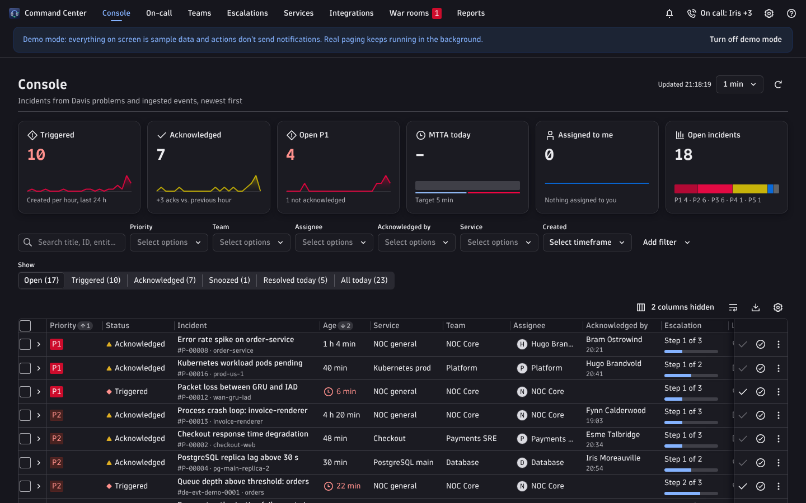
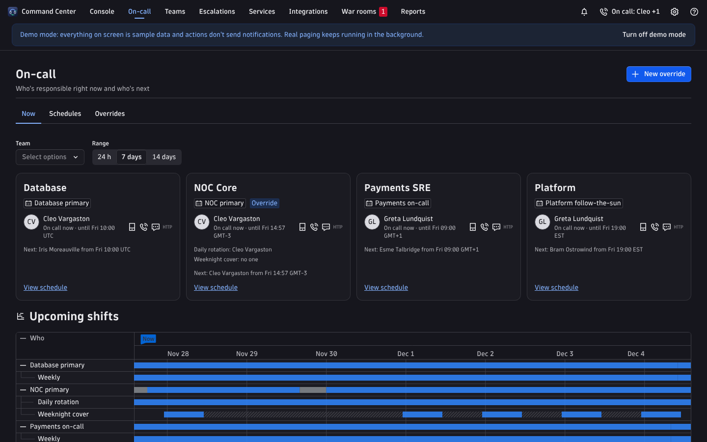
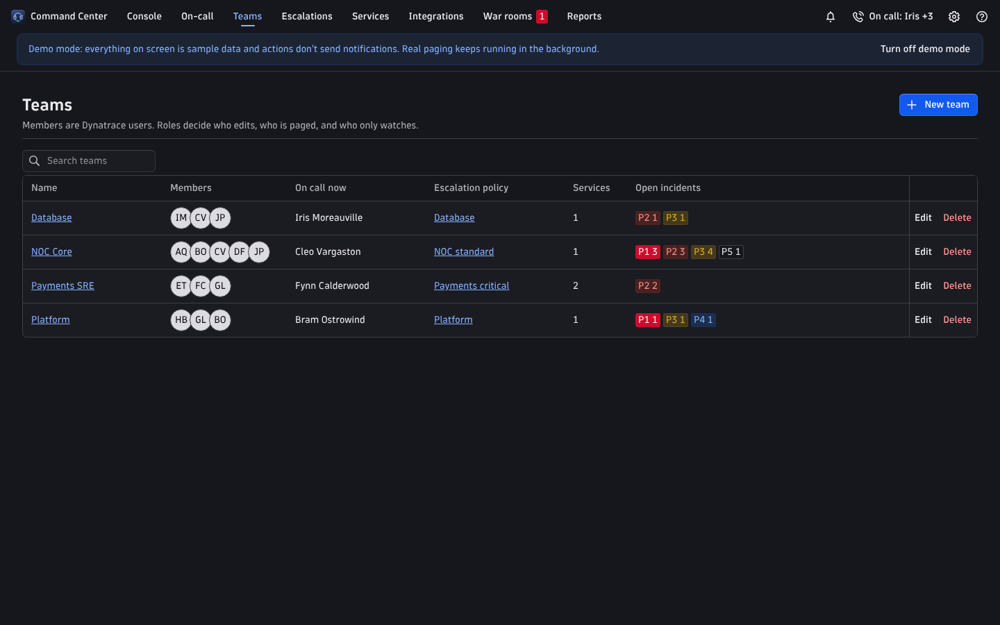
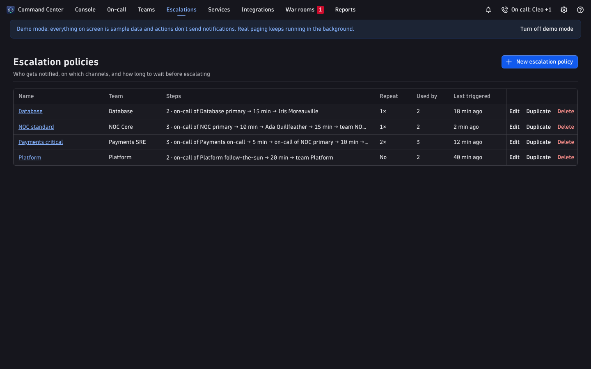
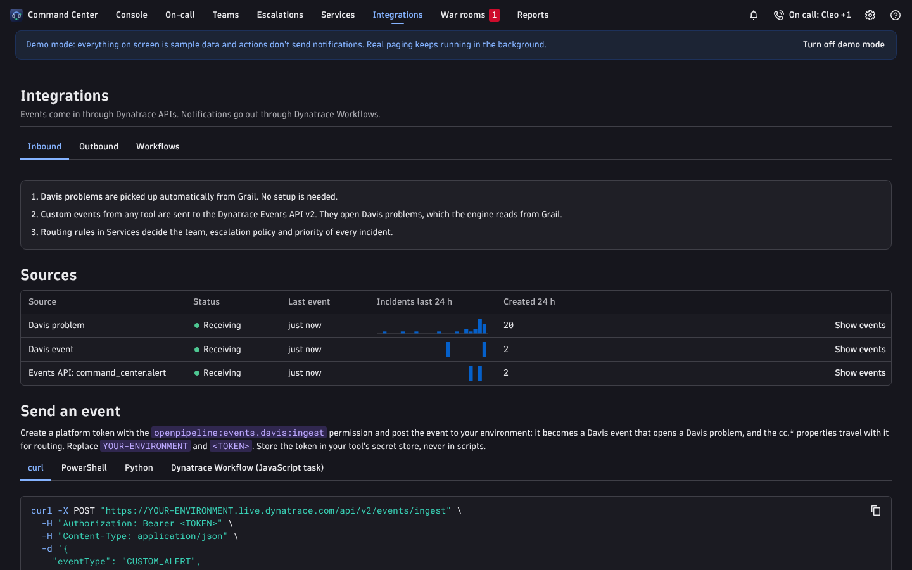
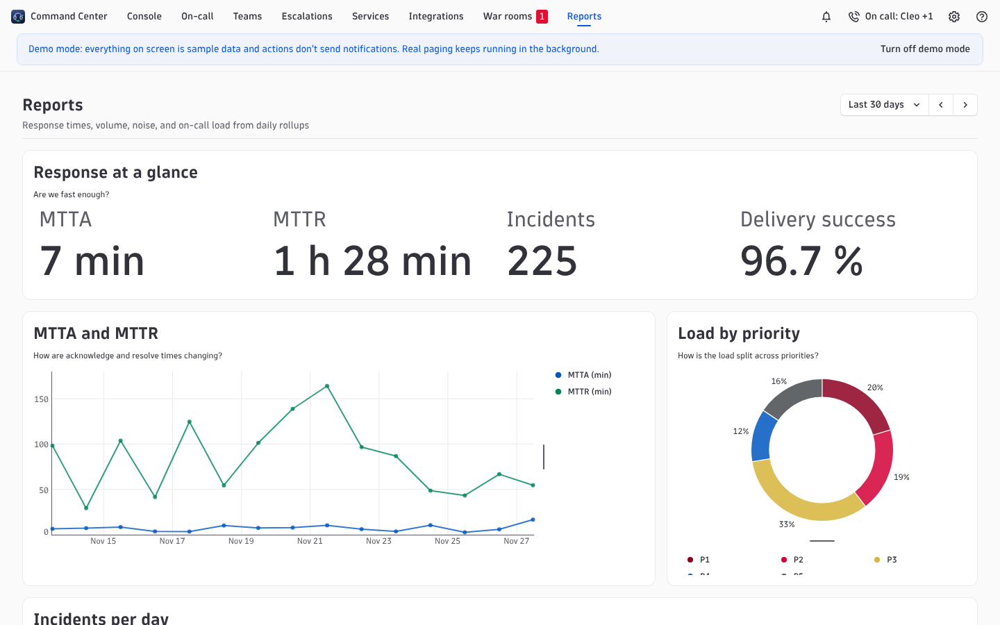
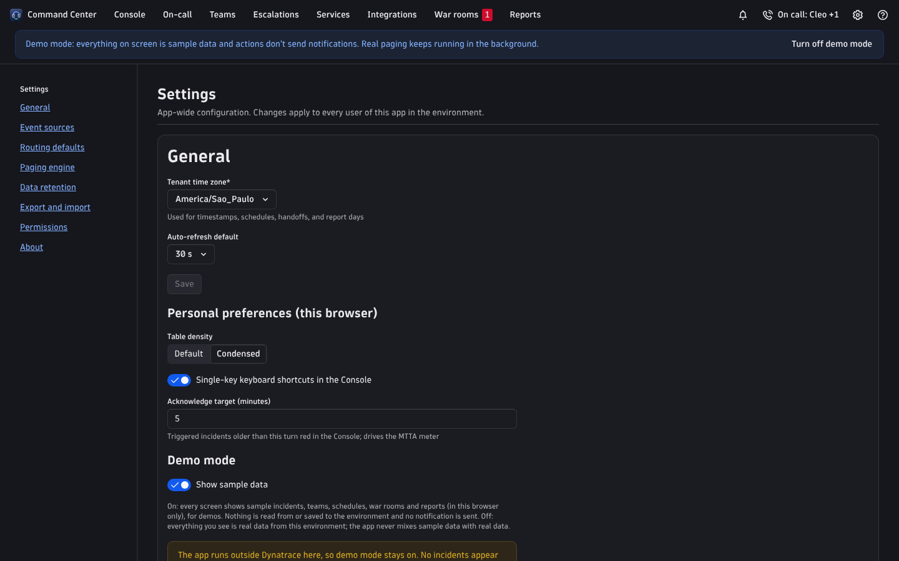

Tour
Screenshots
Taken in demo mode with synthetic data — no real environment, users or phone numbers.















A NOC event console with on-call teams, schedules and escalation policies — inside Dynatrace. Davis problems and API events become incidents; a Dynatrace Workflow pages the right person by SMS, voice call, WhatsApp, IFTTT, Slack, Teams, Telegram or any webhook. An exploration of replacing Splunk On-Call (VictorOps), Opsgenie or a Moogsoft-style console.
Inbound only through Dynatrace, outbound only through a Dynatrace Workflow, everything else in one Strato app.
Live incident table with KPI strip, URL-based filters, search, bulk actions and keyboard shortcuts. Acknowledge with undo, reassign, snooze, escalate now, change priority, add notes, resolve.
Timeline and audit trail, escalation progress, notification ledger with provider errors, affected entities and root cause, notes, link to the Davis problem.
Layers with daily, weekly or every-N-hours rotations, handoff time, time zones and restrictions; overrides; "on call now" and a coverage preview.
Members are users of your Dynatrace environment, picked from IAM. Roles, contact methods and personal notification rules per person.
Delayed steps targeting a schedule's on-call, a user or a whole team; forced channels; repeats; a simulation of who is paged when.
Ordered routing rules (first match wins) on title, category, severity, entity, tags or any field; set service, team, policy, priority or suppress. Rule tester.
Twilio SMS, voice and WhatsApp and IFTTT by default; Slack, Microsoft Teams, Telegram and a generic JSON webhook for any other tool.
MTTA and MTTR, incidents per day, load by priority and team, noisiest services, time-to-acknowledge distribution, delivery success, on-call load.
Sources, defaults, engine limits, retention, configuration export/import, legacy-data cleanup. Demo mode with synthetic data for training and offline preview.
Taken in demo mode with synthetic data — no real environment, users or phone numbers.







The important behaviours to understand before running it in a real environment.
# inbound External tool ──POST /api/v2/events/ingest──▶ Davis opens a problem ──▶ Grail dt.davis.problems / dt.davis.events # every minute: workflow "Command Center · Engine" tick ──POST /apps/<appId>/api/engine-tick──▶ app function: DQL ▸ dedup ▸ route ▸ fold actions ▸ escalate ▸ plan │ └── App State (incidents, ledger, heartbeat) ├─▶ send_twilio_sms · send_twilio_voice · send_twilio_whatsapp · send_ifttt ├─▶ send_slack · send_teams · send_telegram · send_webhook # Credential Vault ▸ provider HTTPS └─▶ report ──POST delivery-report──▶ ledger + incident timeline # UI Strato UI ── reads App State, writes configuration + append-only operator actions ── runs the workflow on demand
Nothing is paged unless the engine workflow runs. The console warns when its heartbeat is older than 3 minutes, reports an error, or has never run.
A failed or empty query is not "all clear". Incidents resolve only on an explicit CLOSED record from the source or by an operator.
Third-party apps cannot hold automation:workflows:write. You import the engine workflow in the Workflows app (or an admin runs scripts/install-workflow.mjs).
Tasks — and the app functions they call — run as the workflow actor. Use a service user, and enable Workflows → Settings → Authorization settings.
A notification ledger plans one entry per person, step, channel and attempt. Senders never retry; the engine re-plans up to 3 attempts. Rare races can notify twice.
Event properties land on the Davis event, not the problem. The engine copies cc.* from a problem's events onto the problem so routing can use them.
All data is in App State: readable by every app user, no optimistic locking, 50 MB per app. Roles are guidance, not server-side permissions.
Task results contain phone numbers and texts, so the workflow is private. Immediate runs (run now, tests, the instant run after escalate now) work only for users who can see it; escalations by others go out on the next scheduled run.
Escalation delays and snooze ends are accurate to about one minute.
A Dynatrace App Toolkit project with a pure TypeScript domain core shared by UI and app functions.
my.command.center
The app runs live DQL queries against Grail, which consumes DPS budget. Understand and measure it to avoid surprises on your bill. Unlike 1.x, the UI runs no Grail queries — the engine does, every minute.
| Cost driver | Impact | Notes |
|---|---|---|
| Engine schedule (1 min) | Dominant | 1,440 runs/day, independent of users. Required for paging; turning the engine off stops paging too. |
| Enabled sources | +1 per source | Davis problems (Q1) always; Davis events (Q2) and generic events (Q3) off by default. |
| Problems with events | +1 per 100 IDs | Q4 reads cc.* of linked events; at most 5 per run. |
| Lookback | Medium | Q1 default 72 h; Q2/Q3 fixed 24 h; Q4 uses the problem lookback. |
| Data volume | Env-dependent | More problems/events = more GB scanned. |
| Open tabs / users | No Grail cost | Each open tab polls App State every 30 s by default. |
Queries per run: 1 (Q1 only) · 2 (default: Q1 + one Q4) · up to 8 (all sources, five Q4 chunks).
Illustrative monthly scenarios — queries/month ≈ 1,440 × queries_per_run × 30
| Scenario | Queries / month | GB at 0.5 MB/query* | GB at 5 MB/query* | Est. cost** |
|---|---|---|---|---|
| Defaults: Q1 + Q4 (2 per run) | ~86,000 | ~43 GB | ~430 GB | Low–moderate |
| All sources: Q1 + Q2 + Q3 + Q4 (4 per run) | ~173,000 | ~86 GB | ~860 GB | Watch this |
| Worst case: all sources, five Q4 chunks (8 per run) | ~346,000 | ~173 GB | ~1.7 TB | Watch this |
* Small environments scan well under 1 MB per query on these tables; busy ones more. These are assumptions, not measurements. ** Multiply GB scanned by your DPS "Grail Query – data analyzed" rate — the dollar amount depends entirely on your rate card, so measure before relying on estimates.
metadata.grail.scannedBytes
from queryExecute.Q1 — Davis problems (always on, ✅ executed on a tenant). Q2–Q4 are in the README and in ui/app/data/dql.ts; Q3 is ⚠️ not validated with data.
fetch dt.davis.problems, from: now() - 72h
| filter not(dt.davis.is_duplicate)
| dedup event.id, sort: { timestamp desc }
| filter event.status == "ACTIVE" or event.end >= now() - 2h
| fields timestamp, event.id, display_id, event.name, event.description, event.category, event.severity,
event.status, event.start, event.end, dt.davis.last_reopen_timestamp,
dt.davis.event_ids, dt.davis.affected_users_count, dt.davis.mute.status,
maintenance.is_under_maintenance, smartscape.affected_entities, root_cause.smartscape_entity,
affected_entity_ids, affected_entity_names, root_cause_entity_name, entity_tags
| sort event.start desc
| limit 1000
app.config.json # app id, version 2.0.0, scopes, YOUR-ENVIRONMENT placeholder api/ ├── engine-tick.function.ts # called by the workflow's tick task ├── delivery-report.function.ts # called by the workflow's report task ├── config.function.ts # configuration as code: export / import (dry run) └── lib/ # engine run, sources Q1–Q4, lease, delivery ui/app/ ├── domain/ # pure TS core: routing, schedules, escalation, actions, engine, reports │ └── contracts.ts # shared types (schemaVersion 1) ├── data/ # App State + memory repositories, DQL, workflow definition & scripts ├── pages/ # console, oncall, teams, escalations, services, integrations, reports, settings, help └── components/ hooks/ # shared UI and the app data context workflow-templates/ # engine workflow + trial-only alert simulator scripts/ # install-workflow, gen-workflow-templates, preview-server, screenshot docs/ # this page, guides/, screenshots/
Deploy the app, then follow the paging setup below.
npm run start — dev servernpm run deploy — deploy to your environmentnpm test · npm run typecheck · npm run lintnpm run check — all of them plus build# 1. Clone and install git clone https://github.com/adrianorafael/Command-Center-for-Dynatrace.git cd Command-Center-for-Dynatrace npm install # 2. Point app.config.json at your environment # "environmentUrl": "https://YOUR-ENVIRONMENT.apps.dynatrace.com/" # 3. Authenticate, then deploy (app.version must increase per environment) npx dt-app auth npx dt-app deploy # Offline preview in demo mode, no environment needed npx dt-app build && node scripts/preview-server.mjs # http://127.0.0.1:4173/ui/
npx dt-app dev (not
localhost:3000 directly). The engine workflow always calls the deployed app functions.Required OAuth scopes
| Scope | Purpose |
|---|---|
storage:buckets:read | Required for any Grail read |
storage:events:read | Read dt.davis.problems, dt.davis.events and events (engine queries Q1–Q4) |
state:app-states:read | Read configuration, incidents and the notification ledger |
state:app-states:write | Persist configuration, incidents and operator actions |
state:app-states:delete | Remove folded actions and deleted configuration |
iam:users:read | Pick on-call team members from the environment's users and show their names |
automation:workflows:read | Show the engine workflow's install status and recent executions |
automation:workflows:run | Run engine now, Send test notification and the immediate run after Escalate now |
Not requested on purpose: automation:workflows:write (only Dynatrace-provided apps may hold it),
no Credential Vault scope (only the workflow reads secrets), no ingest scope.
Team member search calls the IAM API with the signed-in user's session (scope iam:users:read declared by the app).
Observed on a trial tenant: the same API returned 403 "User not authorized" when called with a platform token, even for the
account owner, while service-user listing worked — so scripts should not rely on platform tokens for user lookup. If the picker
shows a 403 inside the app, check that the user belongs to the Dynatrace account that owns the environment and has account
permissions to view users.
Full detail in the README and the guides. The app's Help page has the same checklist and ticks it off.
app-engine:apps:run, app-engine:functions:run,
automation:workflows:read, credential-vault:entries:read, Grail read (storage:buckets:read,
storage:events:read) and state:app-states:read/write/delete.CREDENTIAL_VAULT_ENTRY-…; classic
CREDENTIALS_VAULT-… also accepted): scope AppEngine, Allow access without app context on, and
Owner access only on (the platform rejects public + contextless entries) — so the entry owner must be the workflow actor.
Twilio: username/password (SID and token). IFTTT, Slack, Teams, Telegram, webhook: token.builtin:dt-javascript-runtime.allowed-outbound-connections). Allow api.twilio.com, maker.ifttt.com, hooks.slack.com,
api.telegram.org, your Teams Workflows webhook host and your webhook host — only the ones you use.node scripts/install-workflow.mjs.POST https://YOUR-ENVIRONMENT.live.dynatrace.com/api/v2/events/ingest with
eventType, title, timeout and properties such as
cc.service, cc.priority, cc.tags. Trial environments can import the alert simulator.curl -X POST "https://YOUR-ENVIRONMENT.live.dynatrace.com/api/v2/events/ingest" \
-H "Authorization: Api-Token YOUR-TOKEN" \
-H "Content-Type: application/json" \
-d '{"eventType":"CUSTOM_ALERT","title":"Checkout latency above 2 s","timeout":30,
"properties":{"cc.service":"checkout","cc.priority":"P2","cc.tags":"team:payments,env:prod"}}'
cc.dedup_key and cc.action only apply to the optional Davis-events and
generic-events sources.| Symptom | Cause & fix |
|---|---|
| "The paging engine hasn't run yet" / "is stale" banner | The engine workflow is not installed, not deployed, or failing. Open Integrations → Workflows and the workflow's execution log. Most often: Workflows Authorization settings not enabled for the actor, or the actor lacks app-engine:functions:run. |
tick fails with HTTP 403 |
The actor lacks a permission (app functions, Grail read, App State). |
tick fails with HTTP 404 |
The workflow was generated for a different app ID. Download the workflow JSON again from Integrations and re-import it. |
| No incidents appear | Check Settings → Event sources, then whether the event reached Grail (fetch dt.davis.events in a Notebook) and whether Davis opened a problem. Events below the problem-opening types do not open problems: enable the Davis-events source. |
Routing ignores cc.service |
The service name or ID does not match a service in Command Center, or a routing rule with an explicit service matched first. Use Services → Test a rule. |
| A notification shows failed | Open the incident's Notifications tab for the provider error. Usual causes: host missing in External requests, vault entry without Allow access without app context, vault entry not owned by the workflow actor, wrong vault entry type, phone number not in E.164. |
| A notification shows timeout | The report task did not run or failed. Check the workflow execution; the engine retries up to 3 attempts. |
| Run engine now / Send test fail, or "Escalation recorded, but the engine didn't start" | You cannot see the private engine workflow (owner-only), the workflow ID in Settings is wrong (use Save this ID), or demo mode is on. An escalation is still sent by the next scheduled run. |
| "Update available" on the Workflows tab | The app was upgraded. Download the workflow JSON and upload it over the existing workflow (keep the service-user actor). |
| Deploy rejected because of the version | app.version must be higher than the version installed in that environment. |
"invalid scopes" on dt-app auth |
The tenant or your user lacks IAM grants for a scope in app.config.json. |
| Deploy fails — app must be signed | The app ID must start with my. for unsigned apps. |
| User picker finds nobody, or IAM returns 403 "User not authorized" | Type at least 3 characters; only users of this environment are listed. A 403 inside the app: check that the user belongs to the Dynatrace account that owns the environment and has account permissions to view users. Scripts should not rely on platform tokens for user lookup (observed 403 even for the account owner). |
| Vault entry cannot be saved as "without app context" | Turn on Owner access only; the platform rejects public entries usable without app context. The owner must be the workflow actor. |
| Configuration lost | An admin cleared App State, or the app was uninstalled. Import your last export (Settings → Export and import). |
CUSTOM_ALERT, ERROR_EVENT, AVAILABILITY_EVENT, PERFORMANCE_EVENT and RESOURCE_CONTENTION_EVENT, cc.* copied onto problems, queries Q1, Q2 and Q4, and the imported engine workflow running tick → 8 senders → report every minute.cc.service → schedule on-call → generic webhook via a vault entry → delivered (sent) → report updates the ledger.Guides: inbound events · outbound notifications · on-call setup · operations runbook · changelog